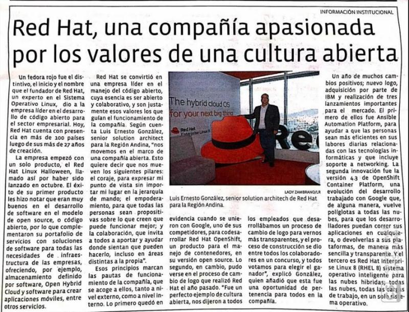

Quien soy
Asesor en transformación digital y tecnologías disruptivas que ayudan a nuestros clientes a generar capacidades para una nueva economía. Con más de 20 años de experiencia en la industria de tecnología e internet, ayudando en este tiempo a muchos bancos, empresas públicas y telcos a crecer y convertir sus retos en oportunidades de reinvención.
Con una sólida experiencia desarrollando y manteniendo soluciones innovadoras en una gran variedad de geografías en latinoamérica.
Mis opiniones no necesariamente corresponden a los de mi empleador y son de mi entera responsabilidad.
Mis presentaciones
Tech University Bogota 2019
Cloud Apps y Microservicios Presentándole a la base instalada de clientes de plataformas P y Z de IBM de Colombia sobre la disrupción de las aplicaciones con Modelo de Microservicios
enlace a la presentación link
enlance al libro migración de bases de datos Link
enlace a programación reactiva Link
Entrevista en Impacto TI: Las ventajas de las nubes híbridas en los ambientes empresariales
El equipo de Impacto TI me entrevisto este 21 de Noviembre del 2019 para hablar sobre nubes hibridas.
Entrevista en Diario La Republica de Colombia 2020
Muy buena entrevista con el Diario La República de Colombia donde abordamos temas de cultura organizativa en Red Hat y los recientes lanzamientos de productos.
